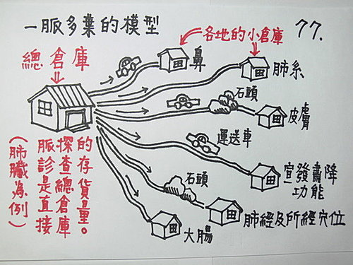

脈理醫理學 33.12.2：黏脈（三）‥‥‥脈法運用‥‥如何判斷你吃的中西藥物，已經對身體造成了毒害，或是肝腎毒性。
作者：陳建元
黏脈代表的就是毒，毒聚集在什麼地方，黏脈就出現在六部脈的什麼地方。這邊指的主要是那種慢慢蓄積起來的慢性毒，而其中主要有兩種，重金屬或化學物之類是毒，但中西藥物吃錯藥或是辨證錯誤下所開的藥物，也是毒，都可以從黏脈中查出來。
如何判斷？先把你自己的脈圖畫出來，脈的寬度大小、鼓動力道，一一依照第 67～～70 條 的脈圖方式畫好，這就是先訂出標準值，吃藥幾天後，再把脈記錄，把兩次核對，如果有哪部脈反而呈現出黏脈，那這藥就有問題了，不是辨證錯誤，就是藥物本身有問題，或是兩者都有問題。黏脈出現在哪部脈，就是毒素聚集的地方，譬如心脈黏，那就是心臟或心血管系統出問題了，如果是肺脈黏，那就是肺系或皮毛出問題了。肝脈如果有黏脈，肝功能理化檢查一定有問題，肝脈如果長期都一直維持在黏脈，會慢慢走向肝衰竭（慢性的要幾個月～幾年～十來年以上），腎脈如果有黏脈，腎功能理化檢查一定有問題，腎脈如果長期都一直維持在黏脈，會慢慢走向腎衰竭而洗腎（慢性的要幾個月～幾年～十來年以上）。這是一個判斷肝腎功能的監控器，藉由這個脈法，醫者可以判斷出開的藥物，到底有沒有開錯方向，需不需要進一步作修正，譬如台灣的龍膽瀉肝湯，日本的小柴胡湯，都有人不慎過劑吃到肝腎衰竭，知道這個脈法，就能避免掉這種事情。
脈證兩者是用來互相印證的，剛好成為一套，缺一不可，學中醫，不能像傻瓜一樣，傻傻的套一些方劑來吃，吃到要洗腎了還在狀況外，這跟瞎子摸像有什麼兩樣？縱然你用的一律是仲景的方劑，但你已經吃到要洗腎了，你知道嗎？
西藥的殺傷力遠比中藥重，就是給藥的方向是正確的，負擔也比中藥重，所以使用西藥之後，如果劑量重些，很容易在肝脈或兩尺脈出現短暫性的黏脈，但先不用擔心，過幾天再看看，如果黏脈消失了，就表示身體自己已經把這個問題清除掉了（每個人對這些毒物的排除力，相差甚大），其實不用擔心，但如果很長一陣子都存在著黏脈，那就表示真的傷到身體了，需要另作處理。中藥如果辨證準確，下藥後，一般不會出現黏脈，但如果辨證錯誤，譬如下焦病機是瘀痰濕交阻，還誤信科學的檢驗報告，說 6味丸有很多不錯的功效，拿來濫補一通，壅上加壅，也會出現黏脈，注意，不是補藥就能補身體，只要辨證相反，補藥就是毒藥。

或問：
上述說：肝脈如果有黏脈，肝功能理化檢查一定有問題，肝脈如果長期都一直維持在黏脈，會慢慢走向肝衰竭（慢性的要幾個月～幾年～十來年以上），腎脈如果有黏脈，腎功能理化檢查一定有問題，腎脈如果長期都一直維持在黏脈，會慢慢走向腎衰竭而洗腎（慢性的要幾個月～幾年～十來年以上）。那若是肝的黏脈，可以在肝的分部，也就是筋這個部位上出問題嗎？或是氣機這個點產生問題 ？或是在眼睛這個部位？腎則可以在水液代謝這個部分出問題嗎？或是在腰這個部位 ？或是在性功能等等？如果可以的話，如何判定毒素所打中的靶位或作用區？
答：
可以。如何判定呢？要用第 56 條、第 56 . 2 條的一脈多葉概念，〈圖77〉，和脈證互參（脈證雙鎖，第 48 條）的概念。
譬如肝的黏脈（以肝脈來解釋，餘脈仿此），是肝的大倉庫有問題，而筋、氣機、眼睛是肝的小倉庫。現今大倉庫有問題，理應這些小倉庫大家要來平均分攤這些毒素，但大倉庫畢竟較大，是主要的大本營，所以忍受度較大，小倉庫較小，所以忍受度較小，這個比喻是指筋、氣機、眼睛這些分部，一般的敏感性較大，當你把到肝脈黏時，毒素當然有可能打進小倉庫，但因小倉庫感受性高，有異樣時，患者會很緊張的自動反應，脈症合參，當然知道靶位所在處，眼睛霧了、筋骨痠痛、氣滯竄痛，這些不是患者會緊張的以主症主動告知，就是問診可知，當知道這些分部有異樣時，當然是以這些地方為主要靶區，但如果問診這些地方都沒異樣，而肝脈確實黏脈明顯，則知道問題出在大本營，只是因為代償性高，患者不自覺而已。
另外，黏脈的兼脈也會指出一些方向，譬如黏弦，問題在氣機、黏緩在水濕、黏澀和血瘀有關‥‥‥等等。
黏脈毒素系統的建立，目前藥王脈學的系統優於西醫系統（目前傳統中醫也沒有這種系統），為什麼？因為目前西醫的水平只到肝腎功能兩項而已，但在藥王脈學裡，一次就是5項，心循環血管系統功能（包括微循環障礙）、脾系統養分吸收障礙、腎系統神經、分泌、大腦整個指揮的紊亂，脈一把，這三組數值同時出來，這些在學理上確實都有密切的影響和交互作用，而這些西醫都有作檢查嗎？有每個疾病通通考慮到嗎？僅舉一組循環血管系統來說明，譬如抽血檢查，血液中的黏滯度正常，並不代表每根血管中的黏滯度都是正常，相同的，血壓檢查正常，也不代表每根血管中的分壓都是處於正常分壓數值【即量血壓只是一個總的大概，對血管中的各分壓是否正常， 只是推論而已】，除非你能身上的每根血管都作檢查，多大的工程？基於經濟因素，這部分西醫可能永遠作不到。
所以，下藥的時候，對於有毒素聚集的地方，不能只滿足在目前西醫所偏重的肝腎兩臟，而是要5臟同時重視。
如何解毒呢？一般就是用黏脈裡所寫的那些藥，如果是在分部，還需加上引經藥。藥用了幾天之後，要核對那部脈是不是漸漸恢復會跳動，如果是的話，那就是打中了，如果依然如故，就是沒打中，就要另找一條路徑來解毒，或解毒藥配合活血藥，或解毒藥配合汗、吐、下，給邪有出路，都是常用的配合方法。
【引用請先來信告知徵求同意，若有涉及販售營利等商業行為，版權所有拷貝盜用必究。】
【藥王脈學講壇】http://blog.xuite.net/drjychen/twblog